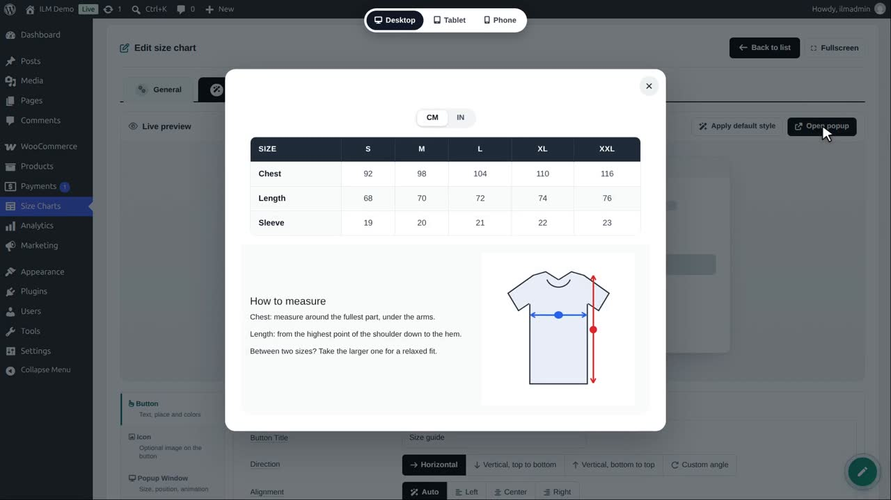
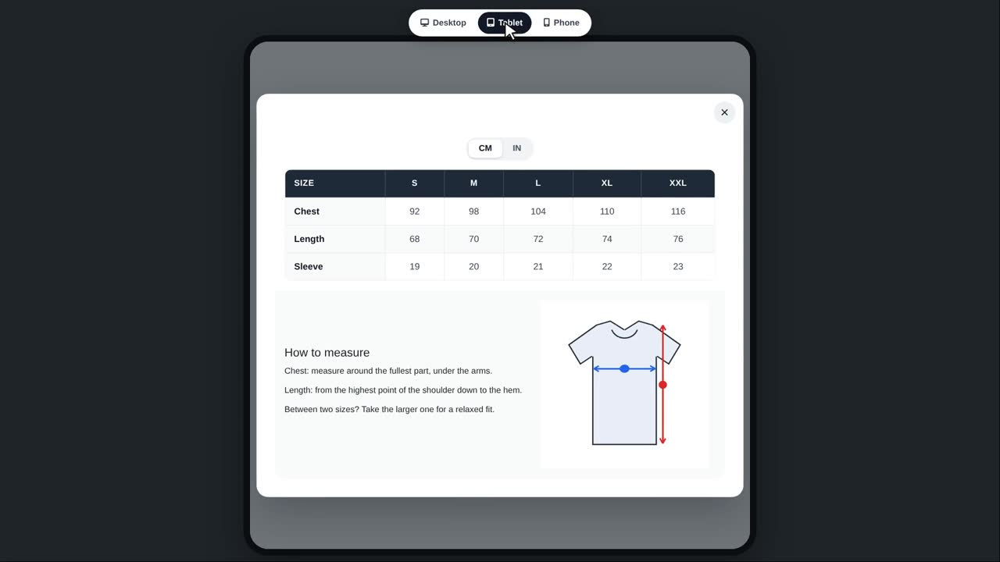
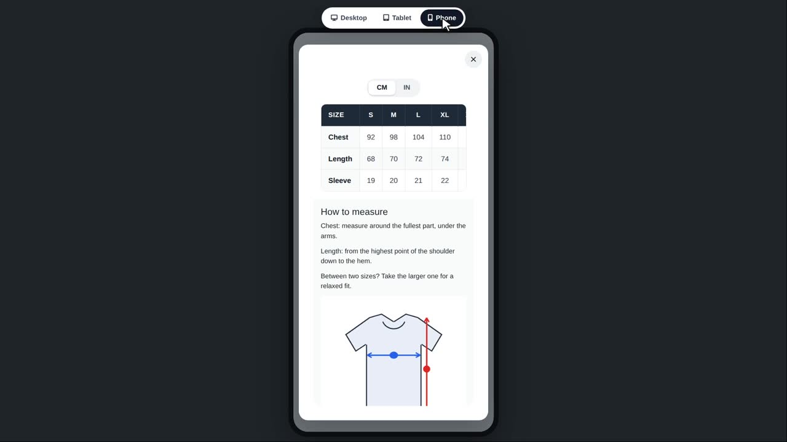
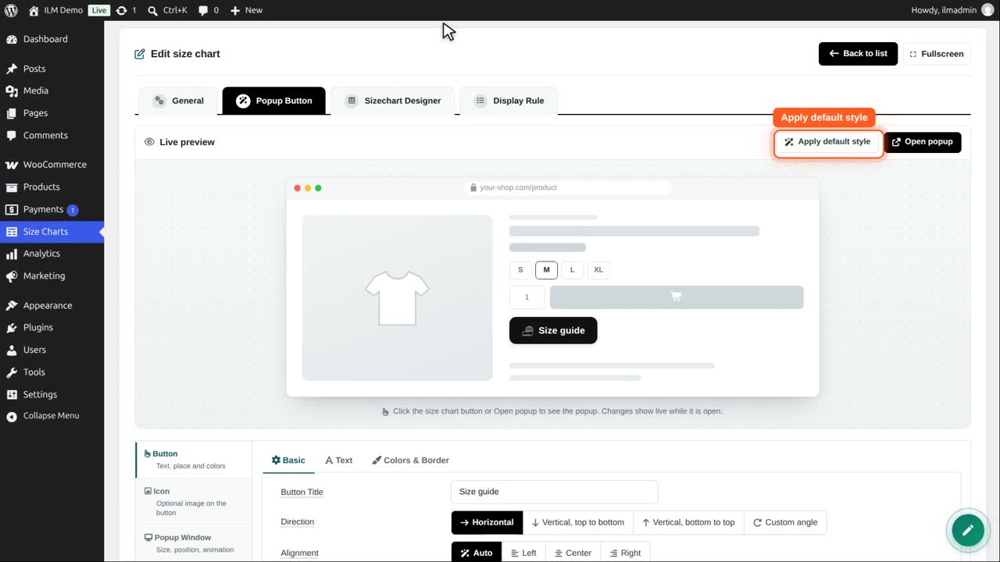
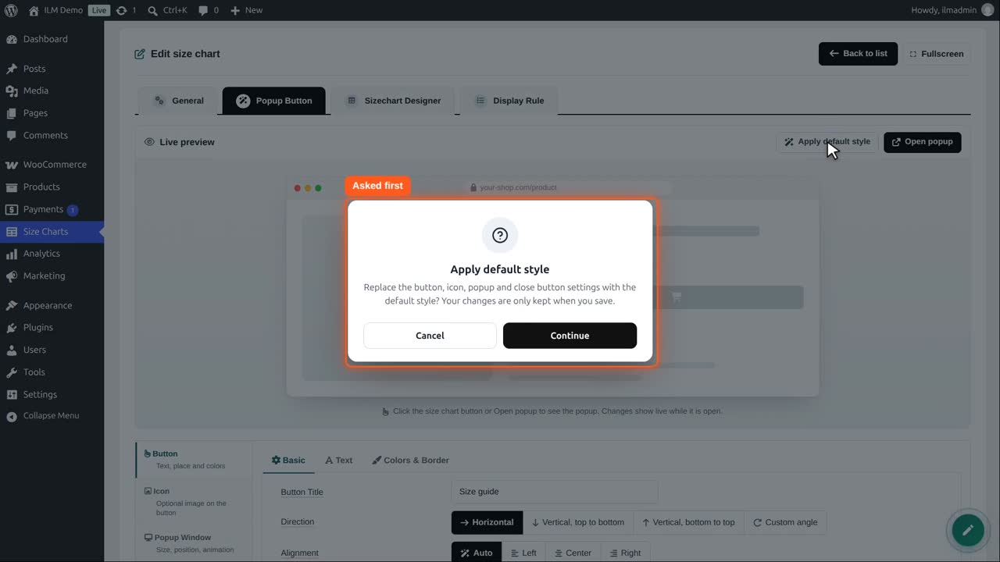
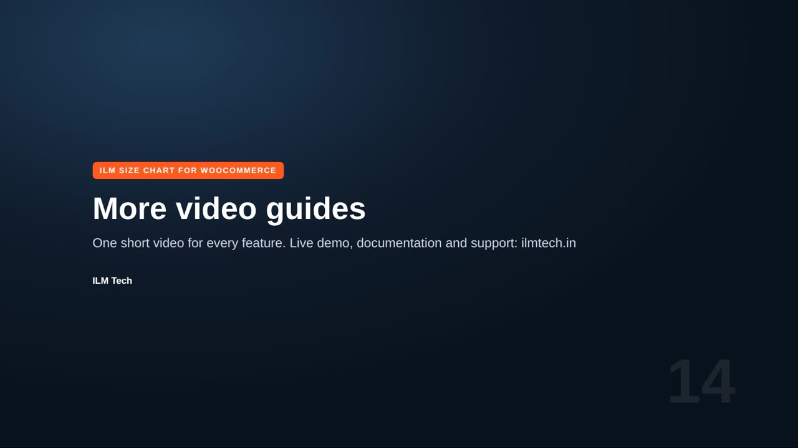

Designs everything the shopper sees in popup mode. The Live preview at the top shows the button on a sample product page and changes while you edit. Click the button in the preview, or Open popup, to see the popup with your chart. Apply default style fills every popup setting with the default look (nothing is saved until you click Save).
Edit the chart, open Popup Button, and click Open popup. The bar at the bottom switches the screen size.

Tablet shows the chart as a tablet shopper sees it.

Phone: a narrow screen. Check that the table scrolls well and the text is readable.

Back to desktop. Apply default style puts every button, icon, window and close button setting back to the default look.

You are asked first. Nothing is saved until you click Save, so you can still go back by leaving the page.

We cancel, and keep our design.
